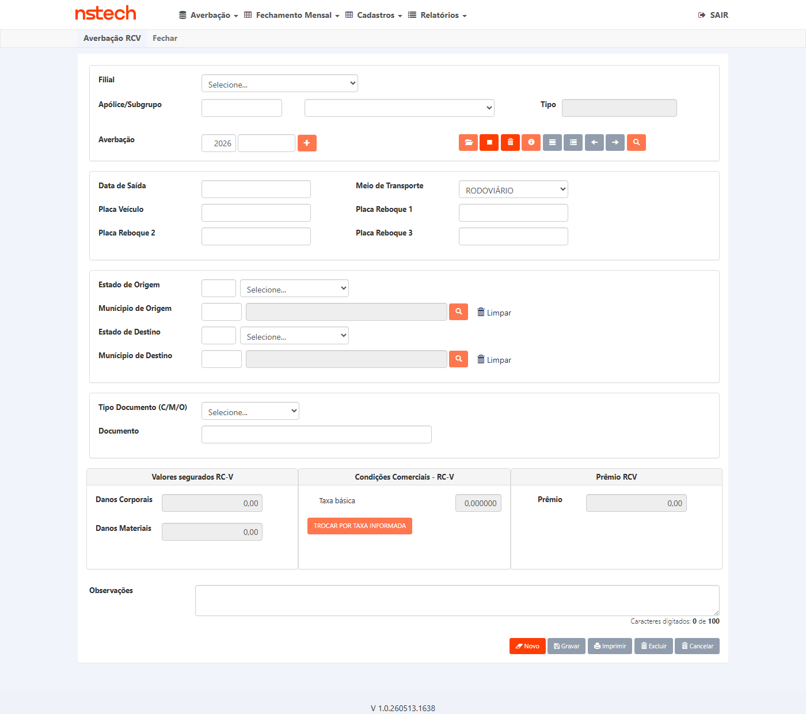
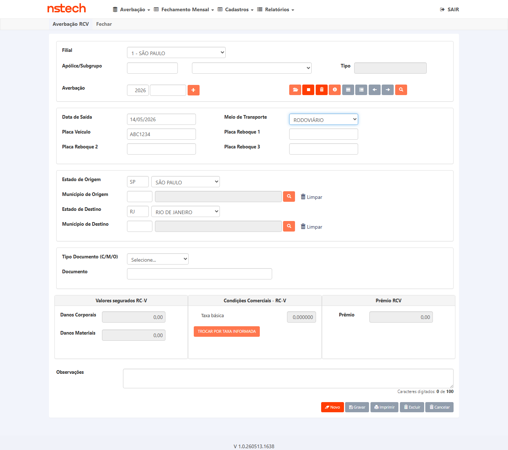
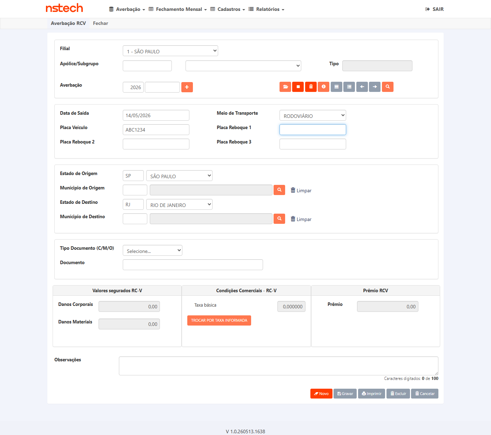

Seguradora · KOVR
Erro no cálculo do prêmio RCV — danos materiais e corporais (DM / DC)
Dashboard principal em Português (Brasil). English: KOVR national hull liability vehicle branch — premium must honor policy limits when fields use fallback.
Regra de negócio facilitada
Garantir que o cálculo do prêmio use os limites DM e DC da apólice quando o operador não preencher esses campos na averbação, e que o valor na tela se atualize sozinho ao sair dos campos obrigatórios.
O que estamos validando
Que não haja prêmio zerado por causa de indicativos ou fluxos desalinhados entre cadastro da apólice, tela de averbação e motor de cálculo — alinhado à correção descrita na task de desenvolvimento.
Atenção (massa de teste)
O card original citou outra apólice no relato; nos testes em ambiente KOVR utilizamos a apólice 15122025, filial 1, conforme massa disponível na homologação.
Nota QA Senior: os contadores (#exec-total, #exec-aprovados, #exec-falhas, #exec-pendentes)
e cada marcador de cenário (#bdd-status-BUG6842-S01, #bdd-status-BUG6842-S02) podem ser atualizados por script após o Playwright
— por exemplo substituindo texto e trocando classes badge-pendente → badge-ok ou badge-erro.
O comentário HTML EXEC_JSON no topo desta secção serve como fallback para parse por linha de comando.
As capturas de ecrã ficam em evidencias/ ao lado deste HTML; no markup use paths relativos, por exemplo <img src="evidencias/01-antes-calculo.png" alt="">.
20260514-104028) — caminhos relativos:
{kind=link}

{kind=link}

{kind=link}


| O que o card pede? (critério / intenção) | Como testamos? (passo a passo) | Onde validar no banco? (tabela / colunas) |
|---|---|---|
| DM e DC da apólice devem refletir-se no fluxo de averbação e no cálculo; prêmio não pode ficar incorreto ou zerado por ignorar limites. | Abrir averbação RCV para a apólice da massa. Preencher dados obrigatórios do transporte. Ao terminar cada campo, sair do campo (por exemplo Tab ou clique noutra zona). Não usar botão de calcular. Observar se DM, DC e prêmio na tela evoluem conforme esperado. Guardar a averbação. | tb_mov_avb_rcv_cit: colunas de limite v_lmr_dm, v_lmr_dc; totais v_cml_pmo, v_tar_pmo. Chaves lógicas: apólice, filial, ramo 59, subgrupo, número da averbação gerado. |
| Se o operador informar DM e DC diferentes na averbação, o sistema deve respeitar esses valores no cálculo. | Na mesma tela, alterar manualmente os valores de limite DM e/ou DC. Após editar, sair do campo e confirmar que o prêmio na interface se atualiza sem ação extra de “calcular”. Gravar. | tb_mov_avb_rcv_cit: v_lmr_dm, v_lmr_dc devem coincidir com o que ficou na tela antes de gravar. |
| Contexto da apólice (vigência, limites cadastrais) deve sustentar o fallback e não bloquear movimento válido. | Confirmar na aplicação que a apólice da massa está ativa no período do teste e que o subgrupo utilizado é o acordado com negócio. | tb_apo_nac_cit: d_ini_vig_apo, d_fim_vig_apo, d_can_apo; limites v_lim_rsp_vgm, v_lim_rsp_apo conforme regra do cliente. |
Visão técnica — automação, nomes de campos e SQL (expandir)
Destinado a QA técnico / automação. Utilizadores de produto podem ignorar esta secção.
Playwright (referência)
Em WebForms legados, preferir localizar controles por sufixo estável no identificador gerado pelo servidor, por exemplo locator('[id$='…']'). Simular gatilho com fill + blur() ou tecla Tab. Tratar iframes da apólice quando existirem.
SQL — movimento RCV
SELECT u_apo_pnc, c_org_prd, c_rmo, u_sgp, u_avb,
v_lmr_dm, v_lmr_dc, v_cml_pmo, v_tar_pmo, d_sda_vgm
FROM dbo.tb_mov_avb_rcv_cit WITH (NOLOCK)
WHERE u_apo_pnc = 15122025 AND c_org_prd = 1 AND c_rmo = 59
ORDER BY u_avb DESC;
SQL — apólice nacional
SELECT u_apo_pnc, c_org_prd, c_rmo,
d_ini_vig_apo, d_fim_vig_apo, d_can_apo,
v_lim_rsp_vgm, v_lim_rsp_apo
FROM dbo.tb_apo_nac_cit WITH (NOLOCK)
WHERE u_apo_pnc = 15122025 AND c_org_prd = 1 AND c_rmo = 59;
Massa KOVR (homologação)
Base smt-hom-citweb-kovr. Apólice 15122025, filial 1, ramo 59. Vigência nacional (snapshot de planeamento): 2025-08-01 a 2026-08-01. Sem linhas em tb_mov_avb_rcv_cit para essa apólice antes do primeiro teste de inclusão.
Task 6848 — termos técnicos
Alinhamento de indicativos (Ind_Taxa_Por_Percurso vs EditarDmDcRamo59), script de colunas v_lmr_dm / v_lmr_dc, fallback averbação → apólice.
Os passos descrevem a ação do utilizador na interface. O sistema recalcula o prêmio quando os campos obrigatórios são preenchidos e o foco sai do campo (perda de foco ou mudança de campo equivalente), não mediante um botão manual de cálculo.
Funcionalidade: Prêmio RCV KOVR com atualização automática na interface
Contexto:
Dado que utilizo a apólice da massa KOVR com filial e ramo acordados para o teste
E que o sistema não deve exigir um botão “Calcular” para atualizar o prêmio após preencher dados válidos
Quando eu preencho todos os dados obrigatórios da averbação de transporte exceto os limites DM e DC, se o cenário for esse
E eu saio de cada campo obrigatório após o preenchimento (por exemplo passando ao campo seguinte ou clicando fora)
Então os valores de DM e DC apresentados na averbação devem corresponder ao que está definido na apólice, conforme a regra de fallback acordada
E o prêmio mostrado na página deve atualizar-se automaticamente
Quando eu confirmo a gravação da averbação
Então os mesmos limites e o resultado do prêmio devem ficar registados de forma coerente na base de dados
Quando eu informo um novo valor para o limite de dano material ou dano corporal na própria averbação
E eu saio desse campo para que o sistema processe a alteração
Então o prêmio exibido deve ser recalculado automaticamente na tela
Quando eu gravo o movimento
Então a base de dados deve guardar os limites que eu deixei na interface antes de gravar
Versão Markdown complementar: plano-e2e.md